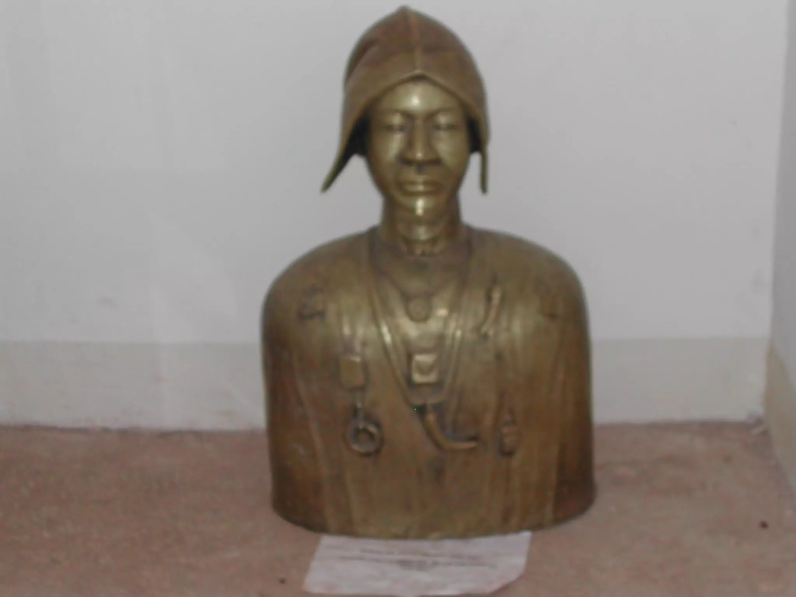

HAUTS-BASSINS


Nous sommes à Noumoundara, le village du 11e chef, le redoutable guerrier, Tiefo AMORO, une des grandes figures de l'ethnie Tiefo.
Une ethnie de plus en plus minoritaire et une langue qui tend de plus en plus à disparaître et avec elle tout le patrimoine culturel qui l'entoure.
Juste au-dessus de la lance de Tiéfo AMORO se trouve un tambour fait de peau humaine et d'un couteau tranchant, datant du XIXe siècle et situé sur le trône du mausolée.
Tiéfo AMORO est l'un des grands guerriers qui a combattu Tiéba TRAORE, Babemba TRAORE, et la fameuse bataille de Samouri TOURE bien connue en Afrique.Amoro Ouattara dit Tiéfo Amoro a succédé à Kologoba Ouattara à la tête du pays Tiéfo. Il s'oppose à la pénétration coloniale en refusant de recevoir Binger lors de son passage à Noumoudara en avril 1888.Mais son nom rappelle surtout la bataille de Noumoudara contre Samory Touré en 1897.
Ce fut la dernière victoire de Samory puisqu'il fut arrêté par le colonisateur juste après cette bataille.
Tiefo Amoro a combattu cet homme et ses canapés. Il est mort les armes à la main, pour l'honneur de sa patrie.
Une place lui est dédiée à Bobo. C'est en face de la gare.C'est sur cette place, la place Tiefo Amoro, que le pape Jean-Paul II a célébré la messe lors de sa visite à Bobo Dioulasso en janvier 1990.
La statue d’Amoro Ouattara dit Tiéfo Amoro est positionnée juste à côté de sa tombe. Dans ce mausolée, il y a naturellement la tombe de Tiéfo Amoro. C’est l’occasion pour les guides de rappeler aux visiteurs la nuance entre un mausolée et un mémorial. Lorsqu’il y a la tombe, on parle de mausolée ; le contraire donne un mémorial, précise Gaston Dao, un ami et assistant d’un guide, qui donne un coup de main lorsqu’il y a beaucoup de visiteurs.
Un lieu sacréC’est une tombe souterraine. Tout visiteur est obligé de se déchausser avant d’effectuer sa décente. La tombe de Tiéfo Amoro se trouve dans une chambre bien espacée et assez bien éclairée. Une statuette en métal représente un homme vêtu d’une tenue traditionnelle, coiffé d’un chapeau et décoré de médailles et d’objets culturels. Il s’agit de Tiéfo Amoro. Tout au long du mur, on peut lire les 52 noms des villages qui constituaient le canton de Noumoudara. « Lors de la construction du mausolée en 2006, nous avons creusé et retrouvé le corps intact. Le ministère de la Culture nous avait demandé d’enlever le corps pour aller déposer dans le cimetière de Sikassossira et les vieux ont dit non. Si on enlève le corps, ce n’est plus un lieu sacré », raconte Siaka Ouattara, un guide, l’ami de Gaston Dao.
Sa tombe, plus qu’un site touristique, est un lieu de prière.En plus de la tombe, le site revêt une certaine sacralité dont le secret est connu des seuls pratiquants. « C’est un lieu sacré pour ceux qui le désirent. Vous pouvez prêter serment peut-être pour votre travail. Je veux que telle chose s’exauce dans ma vie. Si effectivement ça se réalise, je viendrai vous saluer avec quelque chose. Même si c’est 5 francs, on peut revenir donner les 5 francs. La prière se fait à voix basse, les guides ne doivent rien entendre. C’est vous, votre cœur et la tombe », détaille Siaka Ouattara.
Un tambour à base d’une peau humaineEn plus de la tombe, on trouve dans ce mausolée, des objets de la culture de Tiéfo et surtout des objets qui permettent aux visiteurs de connaître davantage celui qui a fait la fierté de son village et son pays. Ce sont les objets de la vie courante. Il y a, entre autres, une flèche, un carquois et un fusil de guerre.